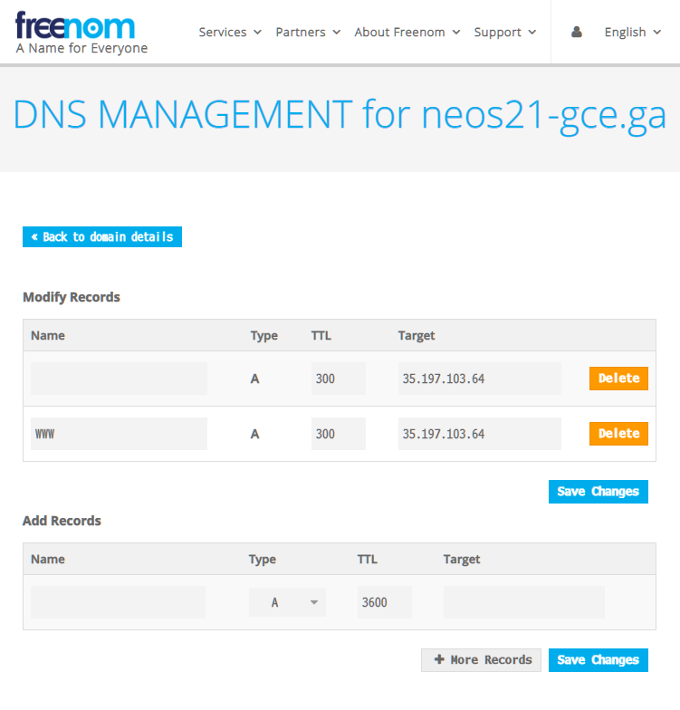

完全無料。GCE で公開している HTTP サーバを Freenom 独自ドメイン + Let's Encrypt で HTTPS 化した
無料枠の GCE (Google Compute Engine) インスタンスを使って、Apache サーバを公開している。コレまでサーバ証明書を用意していなかったので、IP アドレス直打ちの HTTP でしかアクセスできなかった。
今回この環境を、無料で独自ドメインが取得できる Freenom と、無料でサーバ証明書が取得できる Let's Encrypt を使って、完全無料で HTTPS 化することにした。
目次
- 前提条件
- Freenom でドメイン取得・DNS 設定
- Let's Encrypt でサーバ証明書を取得する
- Apache 設定ファイルにサーバ証明書を読み込ませる
- アクセスしてみる
- サーバ証明書を自動更新する
前提条件
- GCE インスタンスはグローバル IP を持っていること
- GCE インスタンスは80・443番ポートを開放しており、ファイアウォールで塞がれていないこと (
httpsでアクセスしようとすると、証明書エラーになるもののアクセスできる、という状態を前提にする) - OS は CentOS 7 を前提とする。他のディストリビューションの場合は certbot の導入方法が異なる
- HTTP サーバは Apache を使用している前提とする。nginx などの場合はサーバ証明書の適用方法が異なる
Freenom でドメイン取得・DNS 設定
まずは Freenom でドメインを取得する。今回は neos21-gce.ga というドメインを取った。
ドメインを取得する際でも良いし、取得後の画面でも良いが、Freenom DNS の設定画面を開く。
- 上部メニュー Services → My Domains → 「Manage Domain」 → 「Manage Freenom DNS」タブ
そしたら次のキャプチャのように設定する。

| Name | Type | TTL | Target |
|---|---|---|---|
| (空白) | A | 300 | 【GCE の Public IP】 |
www |
A | 300 | 【GCE の Public IP】 |
いわゆる「A レコード」を指定している。このドメインはこの IP アドレスに紐付けるぞー、という指定。
設定後、5～10分くらいすると、取得した独自ドメインで GCE に対して HTTP アクセスができるようになっているはず。
HTTPS でアクセスしようとすると、証明書エラーの警告が出る状態であろう。
Let's Encrypt でサーバ証明書を取得する
HTTP アクセスができるようになったら、続いてサーバ証明書の取得に移る。
GCE インスタンスに SSH 接続し、次のように叩いていく。
$ yum install -y epel-release
$ yum install -y certbot python-certbot-apache
# Apache で公開しているディレクトリと、取得したドメイン名を指定する
$ certbot certonly --webroot -w /var/www/html -d neos21-gce.ga
Saving debug log to /var/log/letsencrypt/letsencrypt.log
Plugins selected: Authenticator webroot, Installer None
Starting new HTTPS connection (1): acme-v02.api.letsencrypt.org
Obtaining a new certificate
Performing the following challenges:
http-01 challenge for neos21-gce.ga
Using the webroot path /var/www/html for all unmatched domains.
Waiting for verification...
Cleaning up challenges
IMPORTANT NOTES:
- Congratulations! Your certificate and chain have been saved at:
/etc/letsencrypt/live/neos21-gce.ga/fullchain.pem
Your key file has been saved at:
/etc/letsencrypt/live/neos21-gce.ga/privkey.pem
Your cert will expire on 2020-08-25. To obtain a new or tweaked
version of this certificate in the future, simply run certbot
again. To non-interactively renew *all* of your certificates, run
"certbot renew"
- If you like Certbot, please consider supporting our work by:
Donating to ISRG / Let's Encrypt: https://letsencrypt.org/donate
Donating to EFF: https://eff.org/donate-le
このように、コマンドを叩くだけで証明書が取得できた。各種ファイルは以下にある。
$ ls -l /etc/letsencrypt/live/neos21-gce.ga/
合計 4
-rw-r--r-- 1 root root 692 2020-05-27 18:25 README
lrwxrwxrwx 1 root root 37 2020-05-27 18:25 cert.pem -> ../../archive/neos21-gce.ga/cert1.pem
lrwxrwxrwx 1 root root 38 2020-05-27 18:25 chain.pem -> ../../archive/neos21-gce.ga/chain1.pem
lrwxrwxrwx 1 root root 42 2020-05-27 18:25 fullchain.pem -> ../../archive/neos21-gce.ga/fullchain1.pem
lrwxrwxrwx 1 root root 40 2020-05-27 18:25 privkey.pem -> ../../archive/neos21-gce.ga/privkey1.pem
Apache 設定ファイルにサーバ証明書を読み込ませる
コレだけだと Let's Encrypt のサーバ証明書を取得しただけで、Apache サーバがこの証明書を利用していないので、状況が変わらない。
次の設定ファイルを開き、以下の抜粋のとおりに編集する。
$ vi /etc/httpd/conf.d/ssl.conf
元の行と、書き換えた行を記載している。ディレクトリパスなどは各自のモノに読み替えること。
# Server Certificate:
# Point SSLCertificateFile at a PEM encoded certificate. If
# the certificate is encrypted, then you will be prompted for a
# pass phrase. Note that a kill -HUP will prompt again. A new
# certificate can be generated using the genkey(1) command.
# Original
#SSLCertificateFile /etc/pki/tls/certs/localhost.crt
# My Domain
SSLCertificateFile /etc/letsencrypt/live/neos21-gce.ga/cert.pem
# Server Private Key:
# If the key is not combined with the certificate, use this
# directive to point at the key file. Keep in mind that if
# you've both a RSA and a DSA private key you can configure
# both in parallel (to also allow the use of DSA ciphers, etc.)
# Original
#SSLCertificateKeyFile /etc/pki/tls/private/localhost.key
# My Domain
SSLCertificateKeyFile /etc/letsencrypt/live/neos21-gce.ga/privkey.pem
# Server Certificate Chain:
# Point SSLCertificateChainFile at a file containing the
# concatenation of PEM encoded CA certificates which form the
# certificate chain for the server certificate. Alternatively
# the referenced file can be the same as SSLCertificateFile
# when the CA certificates are directly appended to the server
# certificate for convinience.
# Original (Comment-out)
#SSLCertificateChainFile /etc/pki/tls/certs/server-chain.crt
# My Domain
SSLCertificateChainFile /etc/letsencrypt/live/neos21-gce.ga/chain.pem
設定ファイルを書き換えたら、Apache サーバを再起動する。
$ systemctl restart httpd
なぜか再起動が上手く行かず
当方環境ではなぜか Apache サーバの再起動が上手く行かなくて詰まった。
# よー分からん
$ systemctl status httpd
● httpd.service - The Apache HTTP Server
Loaded: loaded (/usr/lib/systemd/system/httpd.service; enabled; vendor preset: disabled)
Active: failed (Result: exit-code) since 水 2020-05-27 18:44:23 JST; 3min 58s ago
Docs: man:httpd(8)
man:apachectl(8)
Process: 29373 ExecStop=/bin/kill -WINCH ${MAINPID} (code=exited, status=1/FAILURE)
Process: 21731 ExecReload=/usr/sbin/httpd $OPTIONS -k graceful (code=exited, status=0/SUCCESS)
Process: 29372 ExecStart=/usr/sbin/httpd $OPTIONS -DFOREGROUND (code=exited, status=0/SUCCESS)
Main PID: 29372 (code=exited, status=0/SUCCESS)
5月 27 18:44:23 gce systemd[1]: Starting The Apache HTTP Server...
5月 27 18:44:23 gce httpd[29372]: httpd (pid 15739) already running
5月 27 18:44:23 gce kill[29373]: kill: cannot find process ""
5月 27 18:44:23 gce systemd[1]: httpd.service: control process exited, code=exited status=1
5月 27 18:44:23 gce systemd[1]: Failed to start The Apache HTTP Server.
5月 27 18:44:23 gce systemd[1]: Unit httpd.service entered failed state.
5月 27 18:44:23 gce systemd[1]: httpd.service failed.
5月 27 18:46:08 gce systemd[1]: Unit httpd.service cannot be reloaded because it is inactive.
5月 27 18:48:17 gce systemd[1]: Unit httpd.service cannot be reloaded because it is inactive.
# やっぱり分からん
$ journalctl -xe
5月 27 18:48:44 gce systemd[1]: Starting The Apache HTTP Server...
-- Subject: Unit httpd.service has begun start-up
-- Defined-By: systemd
-- Support: http://lists.freedesktop.org/mailman/listinfo/systemd-devel
--
-- Unit httpd.service has begun starting up.
5月 27 18:48:44 gce httpd[29789]: httpd (pid 15739) already running
5月 27 18:48:44 gce kill[29790]: kill: cannot find process ""
5月 27 18:48:44 gce systemd[1]: httpd.service: control process exited, code=exited status=1
5月 27 18:48:44 gce systemd[1]: Failed to start The Apache HTTP Server.
-- Subject: Unit httpd.service has failed
-- Defined-By: systemd
-- Support: http://lists.freedesktop.org/mailman/listinfo/systemd-devel
--
-- Unit httpd.service has failed.
--
-- The result is failed.
5月 27 18:48:44 gce systemd[1]: Unit httpd.service entered failed state.
5月 27 18:48:44 gce systemd[1]: httpd.service failed.
# こうなってる
$ apachectl
httpd (pid 29997) already running
# 設定ファイルに記述誤りがあるワケではない模様
$ apachectl -t
Syntax OK
設定ファイルの書き間違いだとそういう文言がエラーメッセージに出てくるのだが、そうではないようだった。
他に原因が見当たらなかったので、httpd already running というところかなと思い、$ pkill httpd で一旦強引に全ての httpd プロセスを切った。
それから $ systemctl start httpd でやり直したら上手くいった。よかった。
アクセスしてみる
設定が終わったら HTTPS でアクセスしてみる。
無事アクセスできた。おけおけ。
サーバ証明書を自動更新する
Let's Encrypt の証明書は3ヶ月ごとに切れるので、毎月ぐらいのペースで
$ certbot renew && systemctl restart httpd
を実行するよう cron を書いておくと良さそう。
# crontab を編集する
$ crontab -u root -e
no crontab for root - using an empty one
crontab: installing new crontab
# 内容を確認する
$ crontab -u root -l
00 03 01 * * certbot renew && systemctl restart httpd
以上。